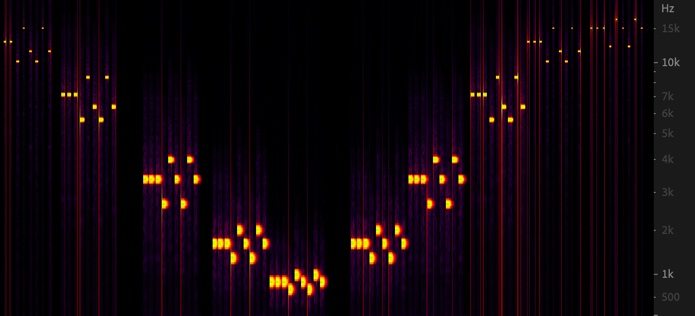
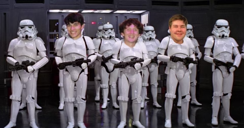
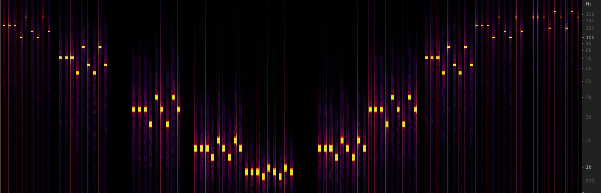
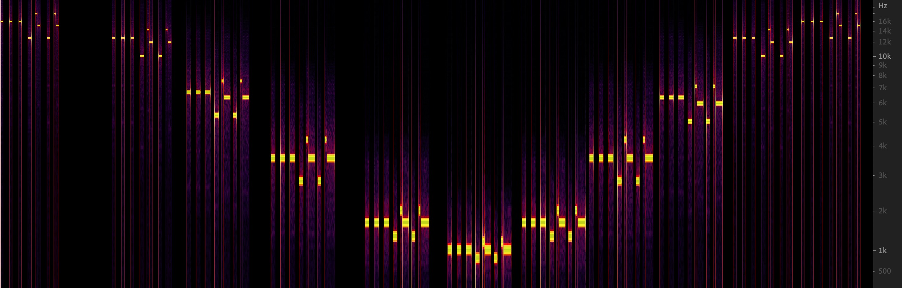
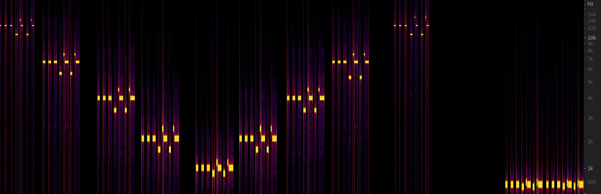

9.35 Illusion Laboratory
Spring 2021 Auditory Lab

How does priming affect the phase locking limit?
In our illusion, we wanted to explore the influence that priming would have on the percieved pitch of notes as a melody was upshifted beyond 4kHz, the limit that the ear can phaselock to soundwaves. We were inspired by the NBC chime illusion, where a familiar melody is initially unrecognizable when it's pitches are beyond 4kHz, but as the tune is brought into phaselock range and then above it again, the tune is recognizable at higher frequencies than before. Now that the tune is known to be a specific melody, it can be percieved at beyond the limit for accurate pitch detection. We believe this to be an example of Bayesian inference; now that the listener has a new prior on the type of sound they are hearing, that being the NBC chime, as long as the rest of the information they can hear is consistent, timing and number of notes, they percieve the sound despite having incomplete pitch information. The scientific question we wish to answer is whether priming on a recognizable melody aids, inhibits, or does not affect the ability to discriminate between pitches changes within the melody when shifted above the phaselocking limit. As our illusion relies on priming, we will leave a complete explanation of the illusion until after you have tried it.
For this illusion we have created two samples, one that has the melody with normalized note intervals and the other with the correct rhythm of the melody. The same sound will be played at a high frequency at first, and then decreasing until within phaselocking range, and then increase to the same high frequency again. Can you tell what the melody is on the way down? Can you hear any changes on the way up? Listen through each sample twice and see if you notice any differences between each playthrough.
Rhythm Normalized Melody
Correct Rhythm
Melody in Isolation
Illusion Explanation
In brief, our illusion primes the user with the Imperial March theme that is upshifted an octave at a time, and once the phaselocking limit is passed, changes pitch elements of the sound to see if the changes are detectable to the user. Each illusion begins with noise at a high frequency and shifts it down to where the melody is recognizable, and then shifts it back up; at the high frequencies of both the start and the finish, the melody has notes that are changed. These note changes are clearly perceptible at lower octaves, and we've attached comparisons of the true and altered melodies at the bottom of the page so one can listen to the difference. We've personally found that after recognizing the melody at the lower levels, people are able to detect changes to the melody at higher octaves than before. By priming the user with a certain melody within the phaselocking limit, the listener now expects to hear the sound they have developed a prior for. With this illusion, we found that we were able to detect the pitch anomalies at much higher frequencies than phaselocking would suggest we'd be able to detect, suggesting that we become more sensitive to pitches we expect to hear.

We heard there are musicians in the lab! Click on the above image for extra hard mode.
Spectrograms of the Illusions
The spectrograms are ordered with no rhythm first, then with rhythm, and then the extra hard mode sample.


Correct Melody Compared to the Changed Melody in Each Illusion
Each sound plays the correct melody and then the altered melody for each sample. The first is for the normalized rhythm sample and the second is the with rhythm sample.
Attneave, F., & Olson, R. K. (1971). Pitch as a Medium: A New Approach to Psychophysical Scaling. The American Journal of Psychology, 84(2), 147–166. http://www.jstor.org/stable/1421351, Accessed 4/8/2014 15:35